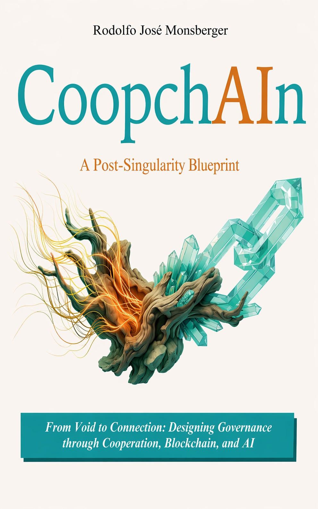
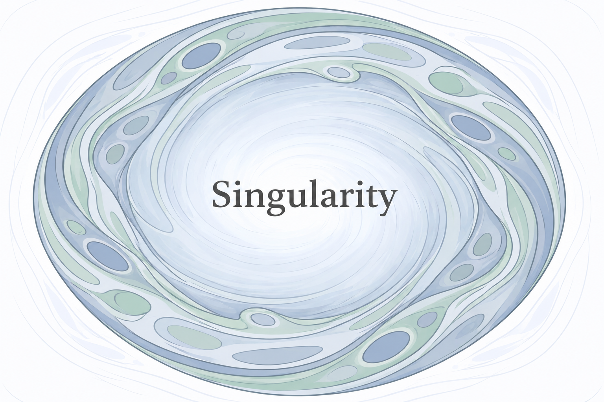
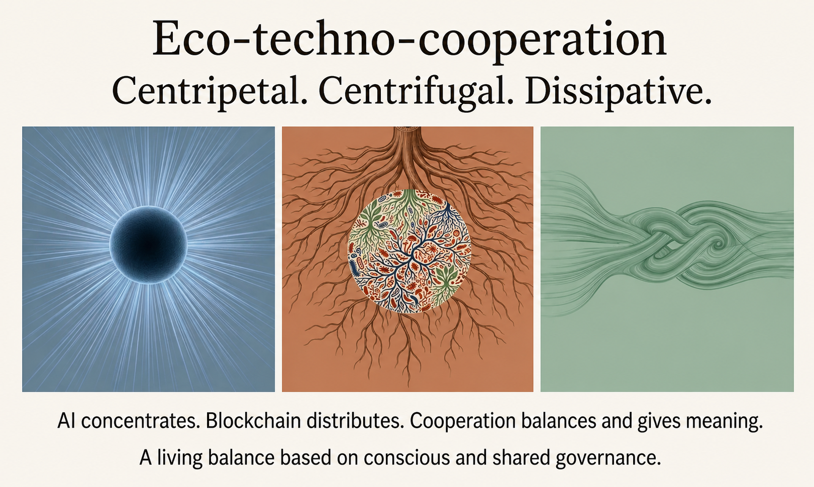

Triple singularity
Technological, economic and socio-cultural: three thresholds that reorder work, identity and governance.
Book + AI + community
CoopchAIn explores how cooperation, blockchain and artificial intelligence can converge into new institutional architectures capable of sustaining meaning, governance and community in the post-singularity era.
This site serves as an entry point to the book's conceptual universe: it presents the central thesis, organizes its core ideas and opens two complementary routes to deepen the project: talk to the book and explore the video summaries.

Introduction
An introduction to the conceptual universe of CoopchAIn: why cooperation, blockchain and artificial intelligence converge in the same institutional challenge.
What it's about
CoopchAIn starts from a central idea: artificial intelligence makes efficiency a given; blockchain redistributes trust infrastructure; and cooperativism provides an institutional grammar so that this transition does not end in extreme concentration or chaotic fragmentation.
The problem of the future is not only technical. It is cultural, institutional and organizational: who decides, under which rules, with what limits and for what purpose.

This home explains the core quickly. These four pieces order the reading and prepare the visitor to enter the book's digital ecosystem.
Technological, economic and socio-cultural: three thresholds that reorder work, identity and governance.
Artificial intelligence concentrates data, scale and decision-making power if there are no institutional counterweights.
It distributes trust and coordination infrastructure, but can also fragment systems if governance is lacking.
Cooperativism appears as a social architecture capable of sustaining community, agency and value distribution.

Three paths to knowledge
Read, talk and see: three complementary doors designed for different depths and learning styles.
Explore the central thesis: how AI, blockchain and cooperativism converge into a new institutional architecture for the post-singularity era.
Get the book →Speak with CoopchAIn GPT: an assistant trained to expand the reading, clarify concepts and explore future scenarios with conceptual coherence.
Start dialogue →Browse the chapter video summaries on the coopchain_pro channel. An audiovisual synthesis of the project for those who learn better by watching.
See videos →Author
Rodolfo José Monsberger is an international consultant, entrepreneur and trainer specialized in finance, technology and institutional transformation.
He has over 30 years of experience working with banks, cooperatives, foundations, multilateral organizations and universities in Latin America, Europe and Asia.
He holds a Bachelor in Administration (Universidad Nacional de Córdoba), an MBA (Karl-Franzens-Universität Graz), a Master in International Banking and Finance (Heriot-Watt University) and an MSc in Fintech with First Class Honors (National College of Ireland).
His work focuses on the intersection between cooperativism, artificial intelligence, blockchain and new governance models in the digital economy.